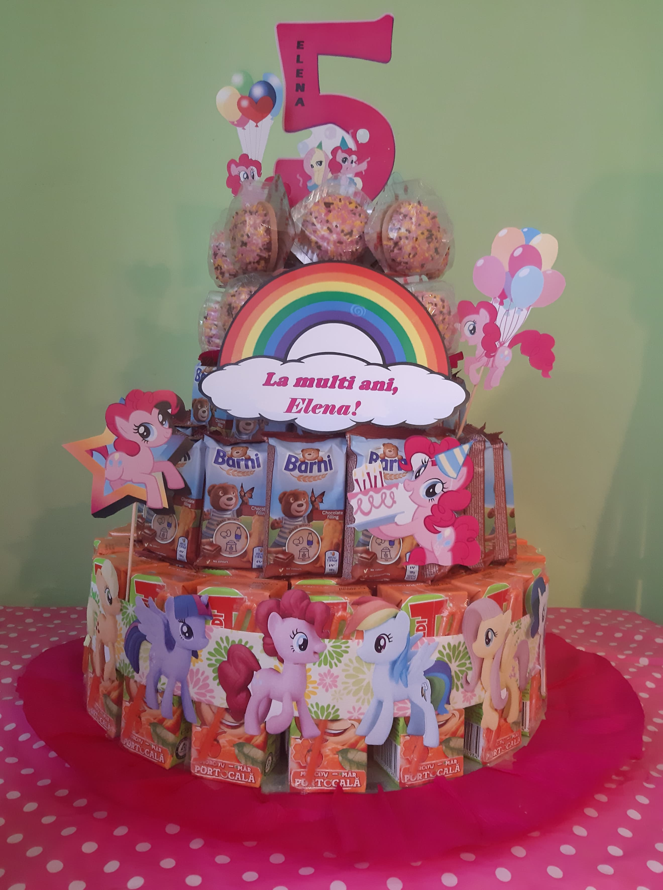
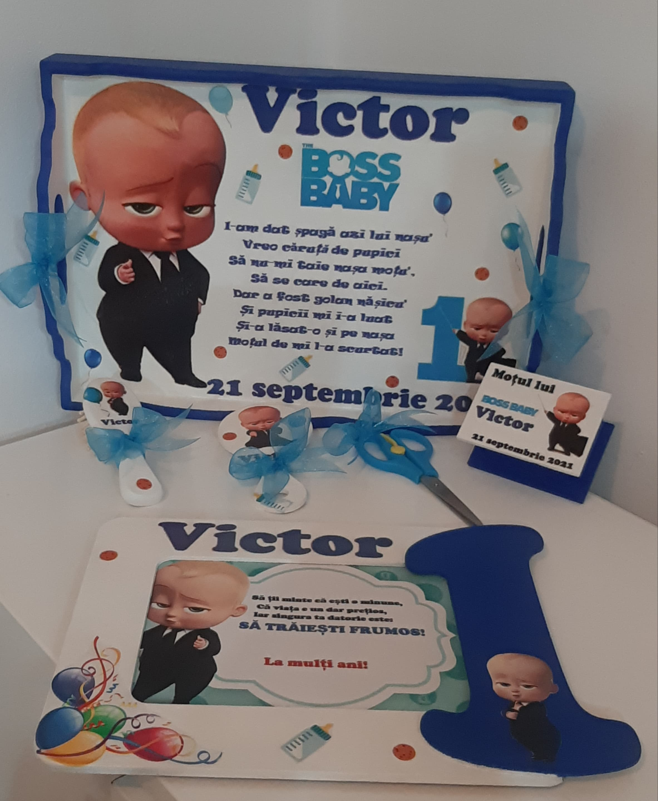
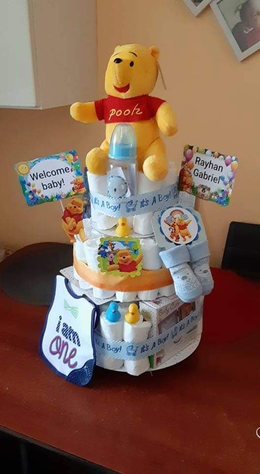
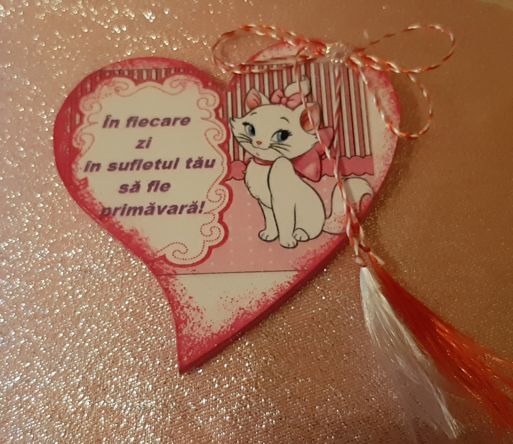
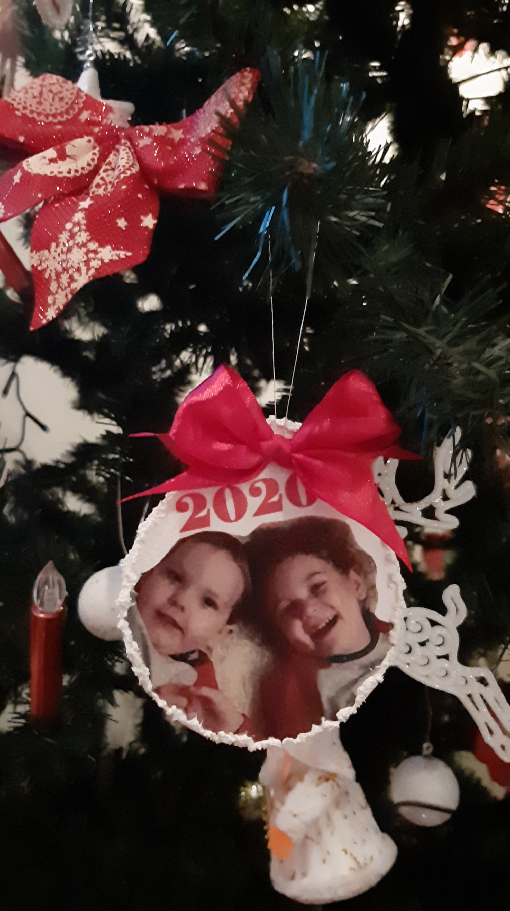
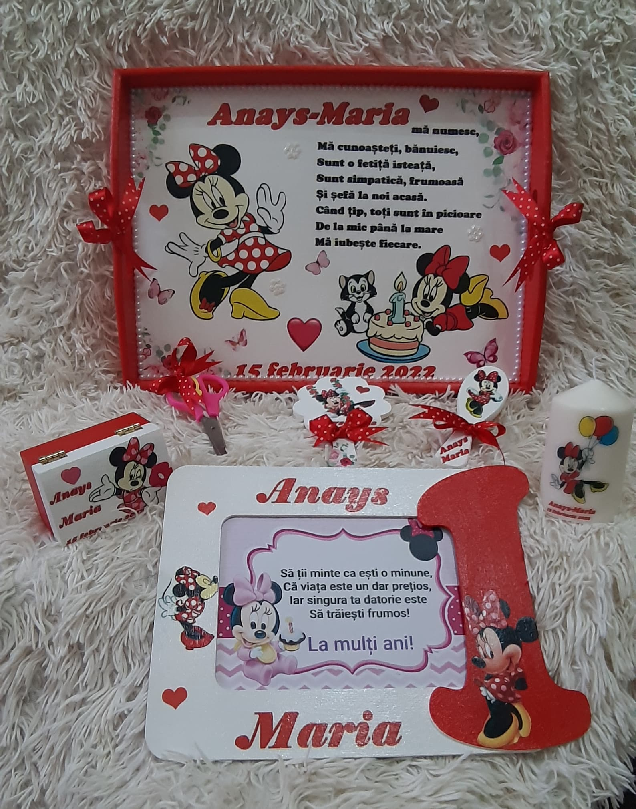
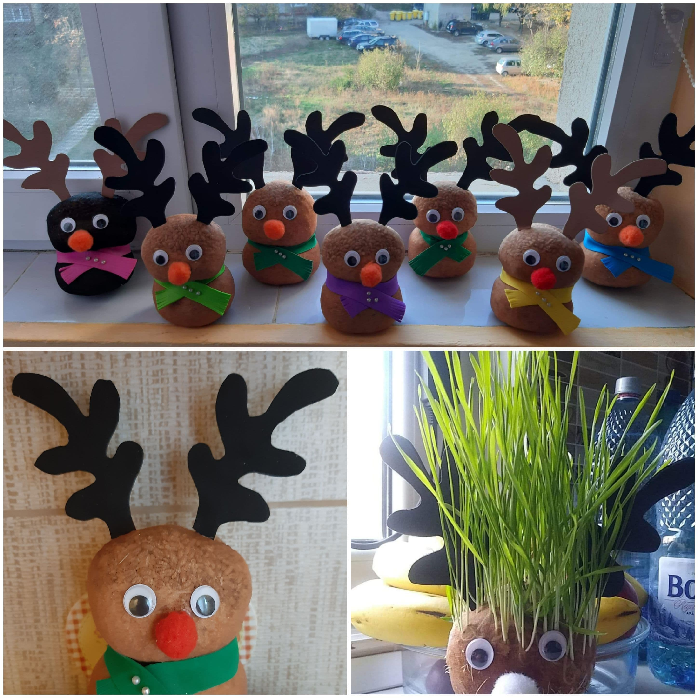
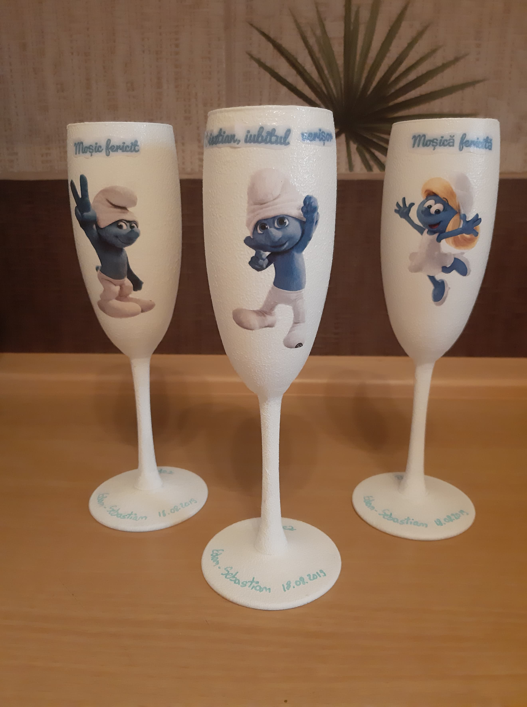

Handmade by Andreea
Singura modalitate prin care poti face lucruri extraordinare
este
sa iubesti ceea ce faci
Apasa pentru mai multe detalii



Handmade
by Andreea
Diferite lucruri realizate manual cu grija si dragoste: torturi din dulciuri sau pampersi, tavite si accesorii pentru botez, papusi de diferite forme: reni, pisici, ursuleti din grau ce va incoltii de sf. Andrei si martisoare cu diferite mesaje unicat pentru persoane dragi
Se pot comanda telefonic, sau pe messanger.


Handmade
by Andreea
Diferite lucruri realizate manual cu grija si dragoste: torturi din dulciuri sau pampersi, tavite si accesorii pentru botez, papusi de diferite forme: reni, pisici, ursuleti din grau ce va incoltii de sf. Andrei si martisoare cu diferite mesaje unicat pentru persoane dragi
Se pot comanda telefonic, sau pe messanger.
Torturi / Tavite pentru taierea motului/ martisoare/ papusi din grau


